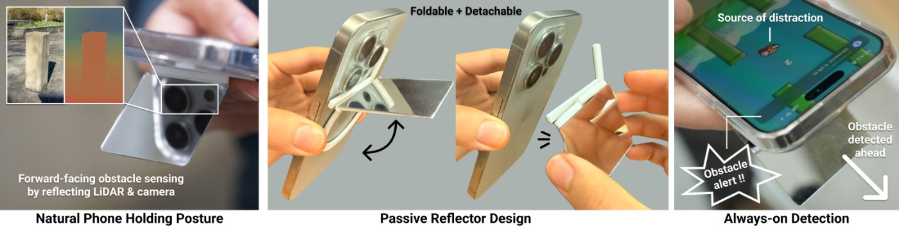

先纠正相机朝向
手机拿得舒服时，后置相机往往照着地面，正好错过行走方向。GlanceAR把一面镜子固定在手机相机模组附近，让现有相机和LiDAR通过反射观察前方。附件没有电池或新增电子传感器，软件仍在手机端处理。这个改动针对的是握持姿势，而不是要求使用者把手机一直举成导航设备。论文给出的约零点三美元只是附件材料成本；带LiDAR的手机、制作安装和后续维护并不包含在内。
GlanceAR · 论文 · 研究原型

手机拿得舒服时，后置相机往往照着地面，正好错过行走方向。GlanceAR把一面镜子固定在手机相机模组附近，让现有相机和LiDAR通过反射观察前方。附件没有电池或新增电子传感器，软件仍在手机端处理。这个改动针对的是握持姿势，而不是要求使用者把手机一直举成导航设备。论文给出的约零点三美元只是附件材料成本；带LiDAR的手机、制作安装和后续维护并不包含在内。
系统先读深度，接近障碍时才让本机视觉语言模型解释物体，再提供屏幕、声音或触觉提醒。提醒可以只表达前方有东西，也可以带距离、类别或画面。这里需要区分探测与解释：距离触发解决何时提醒，文字标签帮助判断看到了什么，但标签本身不能保证障碍不会漏掉。对使用者而言，提醒最需要做到的是及时引导重新观察道路，额外的识别描述如果挤占注意力，反而会延长低头阅读。
作者让十一位参与者在室内外路线中操作手机，比较完整反射附件、只反射LiDAR的版本和无附件超广角基线。低矮物体仍是漏检来源，传感方案之间的抬头次数相近，震动或简短提示更受欢迎。样本未包含视觉、听觉或行动障碍者。这些结果支持继续研究提醒方式，却不能说明真实交通事故已经下降，也不应转述为盲人导航已验证。游戏干扰任务与长期通勤中的消息、路口和拥挤情况仍不同。
虽然处理在本机，前向反射相机仍可能令路人误以为自己被隐蔽拍摄。只用LiDAR的版本因此具有不同的取舍：少了可识别的前向画面，也少了用于解释障碍的视觉信息。折叠设计解决的是携带问题，不会自动解决漏检、注意力依赖和社会接受度。对于准备做同类附件的团队，常规走路、不看手机和简单震动提示都值得作为比较对象；不要只比较哪个识别模型说得更详细。日常使用还需要明确显示传感不可用或被遮挡的状态。